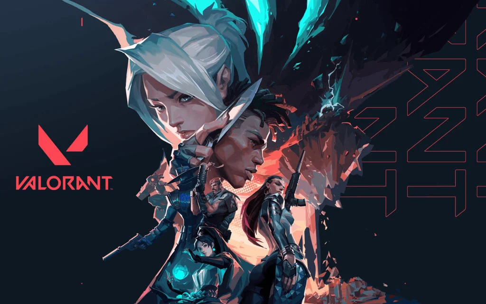
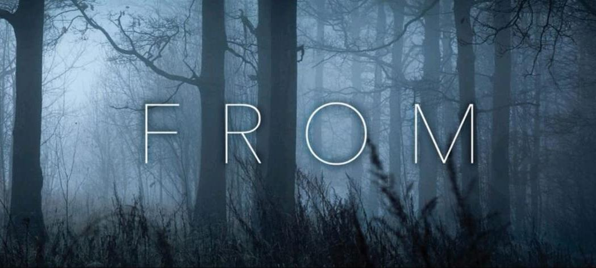
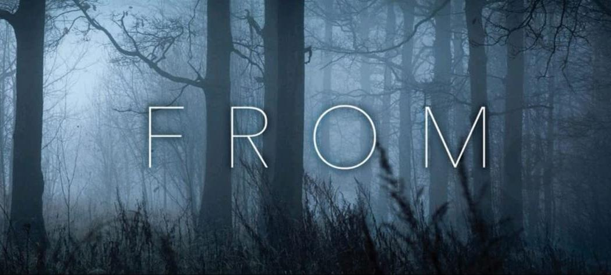
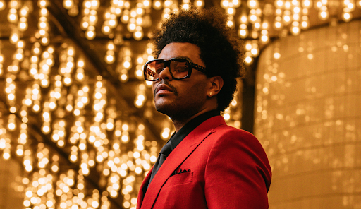

Sobre mim
Olá, meu nome é Jackson, nasci em Curitiba no dia 17 de novembro de 2002 e atualmente tenho 21 anos.
Moro atualmente na Area Rural de Araucária região metropolitana de Curitiba, gosto do clima tranquilo e fresco que a área rural proporciona, sem contar a vida um pouco distante da bagunça e poluição da vida urbana.
Sou casado com minha esposa Emanuele, não temos filhos ainda, somos apenas “pais de Pet” como muitos dizem.
Eu me considero uma pessoa tranquila de lidar, gosto de aprender coisas novas, trabalho bem em equipe. Meus pontos de melhoria acredito que sejam o boqueio criativo e a imperatividade.
Hobby
Tenho alguns Hobbys para distrair e relaxar a mente:
- Jogar no Pc, tanto jogos competitivos como Valorant e Apex Legends, até jogos mais casuais como Assassin's Creed e Stardew Valley.

- Gosto de assistir filmes, series e animes o meu favorito atualmente é One Piece.
 

- Escuto bastante música para relaxar, principalmente para dormir, meus estilos são pop e trap, como The Weeknd e Post Malone
